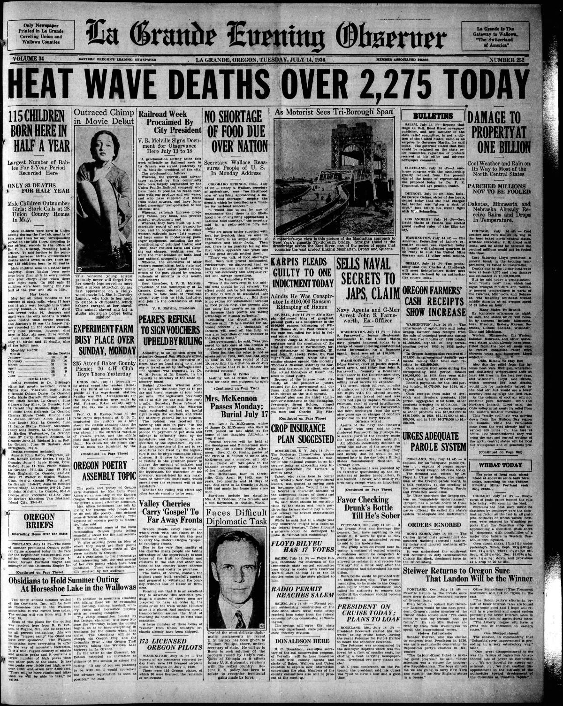
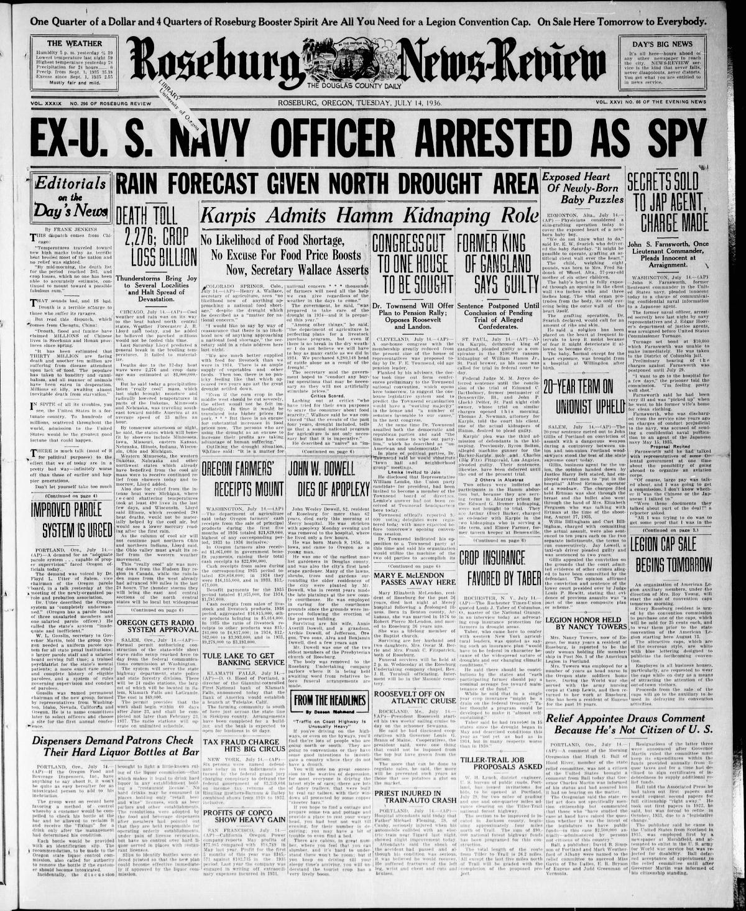
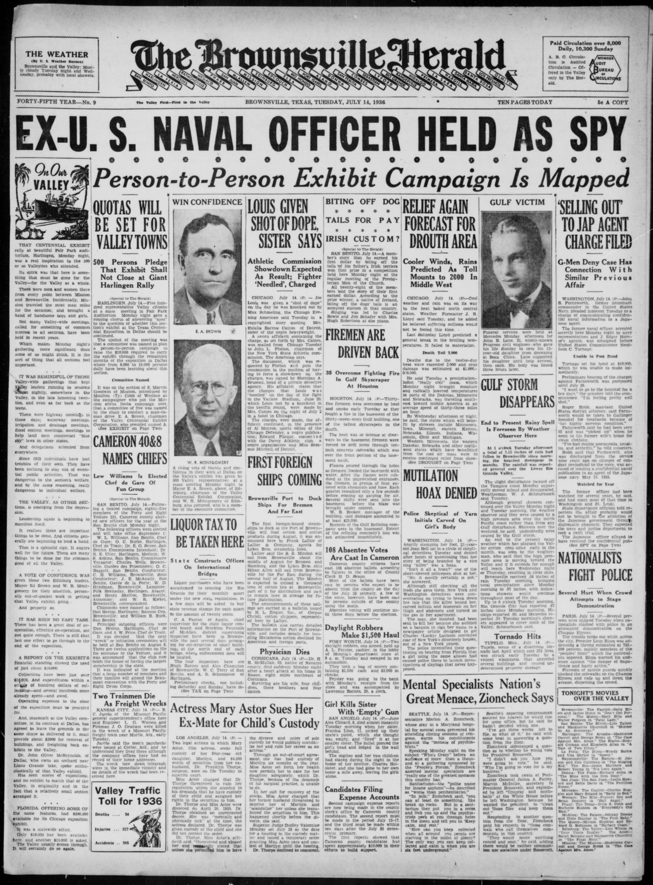
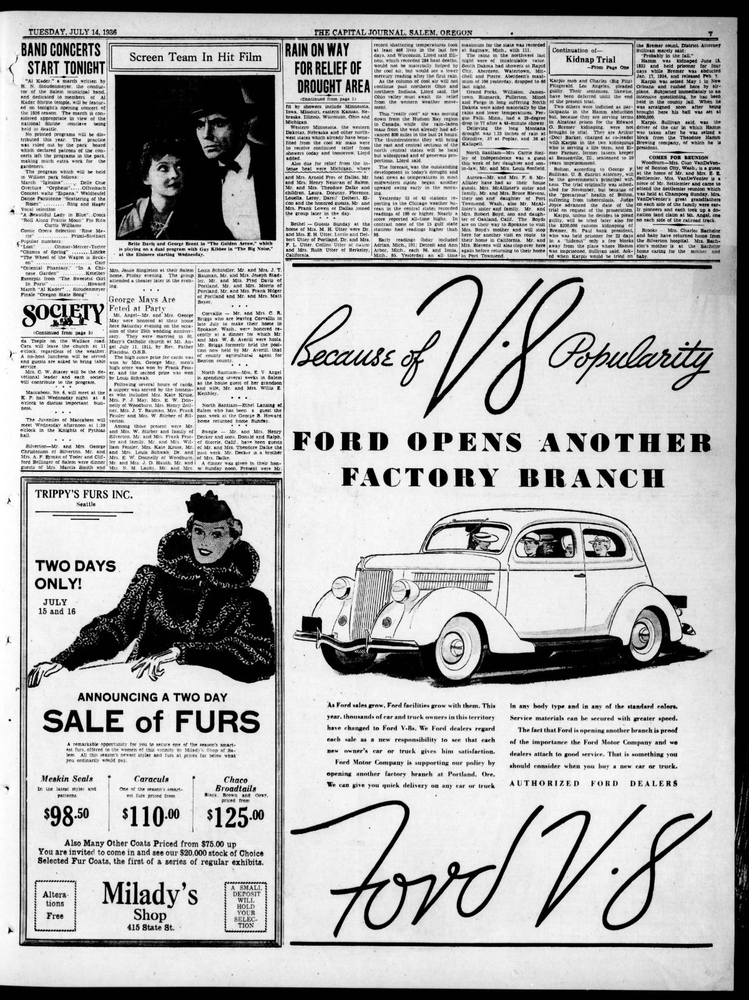

HN HN-500 · July 14, 1936 · Disasters, Accidents & Emergencies > Floods, Tsunamis & Extreme Weather > Heat emergencies
Source: Indianapolis Times, p. 1 — original page; National Weather Service, July 1936 heat wave.
Report: The wire report counted at least 2,087 heat-related deaths, describing overwhelmed Midwestern cities and forecasters' hope that cooling showers would end the prolonged heat. It also printed a very large contemporary property-damage estimate.
Assessment: 2,087 was a mid-event figure, not the final toll. The National Weather Service's later overview estimates roughly 5,000 deaths in the United States during the 1936 heat wave. These refer to differently timed counts and should not be silently substituted for each other; the preliminary monetary estimate has not been independently audited here.
Authentic scans retrieved from Historic Oregon Newspapers (University of Oregon) and Library of Congress / Chronicling America. Article crops are located using the archive's own OCR word coordinates and rendered at native crop resolution; page scans are reduced-size access renditions. No images were generated, mocked, or retouched.




Not yet acquired. Queued for provider-specific acquisition testing (see source-acquisition manifest).
URL (preserved verbatim): https://newspapers.library.in.gov/?a=d&d=IPT19360714.1.1
Saved research report: Historical_Newspaper_Event_Research_478-502_2026-10-23.md
Evidence note: A newspaper report means a historical publication made a claim; it does not establish that claim as fact. Contemporary reporting is separated from later scholarly context and our own assessment.